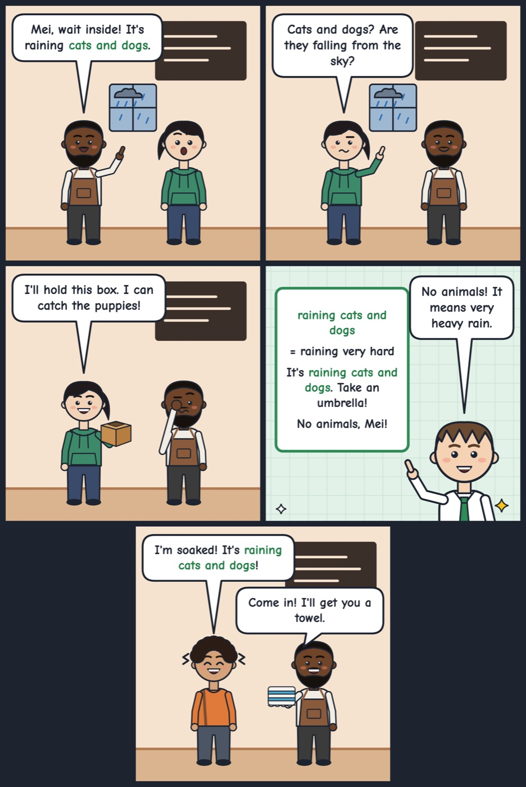

raining cats and dogs
It is raining very hard.
We can't walk to the park today. It's raining cats and dogs.
Tip: Use it as a continuous or simple verb phrase: 'It's raining cats and dogs' or 'It was raining cats and dogs when we left'; don't use it for light rain, and don't say 'raining dogs and cats'.
Hear it in conversation
AmiraAre you still coming over for dinner tonight, Ken?
KenI'm trying to, but I just looked outside. It's raining cats and dogs.
AmiraOh no. Do you have an umbrella?
KenYes, but it won't help much. I'll get soaked on the way to the station.
AmiraThen take a taxi. I'll pay you back when you get here.
KenThanks, Amira. I'll book one now.
Workbook
1. What does it mean?
In this conversation, what does 'raining cats and dogs' mean?
2. Fill the gap
We waited inside the café for an hour because it was and the streets were flooded.
3. Choose the best reply
Olena: Did you get to the market this morning?
4. Your turn: speak
Tell me about a time bad weather changed your plans.
Show an example answer
Last month I planned a picnic with some friends, but when I woke up it was raining cats and dogs. We moved everything to my flat and cooked indoors instead. It turned out to be a really fun day anyway.
Answer key: raining cats and dogs
- 1. D. It is raining very hard.
- 2. raining cats and dogs
- 3. A. No, I stayed home. It was raining cats and dogs.
- 4. Example: Last month I planned a picnic with some friends, but when I woke up it was raining cats and dogs. We moved everything to my flat and cooked indoors instead. It turned out to be a really fun day anyway.
See it in a comic
